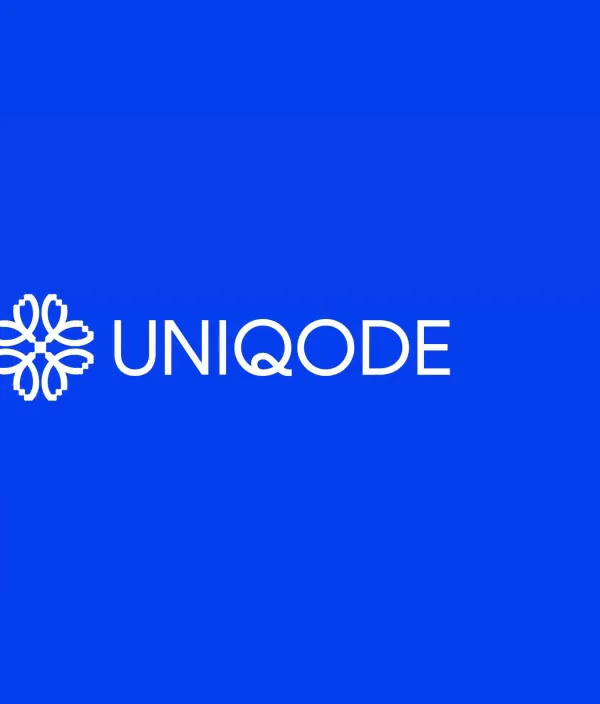
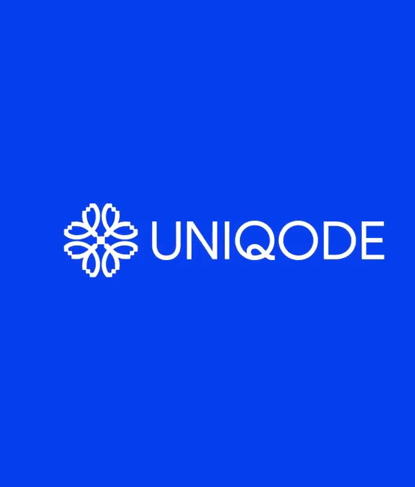

Uniqode / V399
Uniqode｜点阵品牌短片
用同一种点阵媒介连接几何纹样、现实场景和品牌标记。
构图与编排 可播放 · 可替换内容
整体编排规则示例
查看 HTML 源码
<!doctype html><html lang="zh-CN"><meta charset="utf-8"><meta name="viewport" content="width=device-width,initial-scale=1"><title>Uniqode｜点阵品牌短片 · sequence</title><style>html,body{margin:0;width:100%;height:100%;overflow:hidden;background:#eaf2f5}canvas{display:block;width:100%;height:100%;object-fit:contain}</style><body data-mode="sequence"><canvas width="1000" height="600"></canvas><script src="data.js"></script><script src="common.js"></script><script src="scene.js"></script><script src="bridge.js"></script></body></html>画面元素固定细网格蓝白符号单元几何纹样城市剪影品牌字标
MOTION LANGUAGE
动作与构图
局部动作 · 构图规则
01
先统一媒介，再更换图像
先统一媒介，再更换图像规则示例
查看 HTML 源码
<!doctype html><html lang="zh-CN"><meta charset="utf-8"><meta name="viewport" content="width=device-width,initial-scale=1"><title>Uniqode｜点阵品牌短片 · sequence</title><style>html,body{margin:0;width:100%;height:100%;overflow:hidden;background:#eaf2f5}canvas{display:block;width:100%;height:100%;object-fit:contain}</style><body data-mode="clip" data-start="0" data-end="3.6"><canvas width="1000" height="600"></canvas><script src="data.js"></script><script src="common.js"></script><script src="scene.js"></script><script src="bridge.js"></script></body></html>网格的尺度和行列位置稳定，只改变蓝白分布。圆环、菱形与棋盘沿用同样的细单元。
02
让城市进入同一张网格
让城市进入同一张网格规则示例
查看 HTML 源码
<!doctype html><html lang="zh-CN"><meta charset="utf-8"><meta name="viewport" content="width=device-width,initial-scale=1"><title>Uniqode｜点阵品牌短片 · sequence</title><style>html,body{margin:0;width:100%;height:100%;overflow:hidden;background:#eaf2f5}canvas{display:block;width:100%;height:100%;object-fit:contain}</style><body data-mode="clip" data-start="4.4" data-end="7.5"><canvas width="1000" height="600"></canvas><script src="data.js"></script><script src="common.js"></script><script src="scene.js"></script><script src="bridge.js"></script></body></html>城市轮廓压成明暗块后再点阵化；横向移动时保持建筑的整体身份，网格仍然固定。
03
用纯色收束复杂纹样
最后切换到干净蓝底，先出现白色字标，再留下独立图形。信息密度从高到低，给品牌留出阅读时间。
SEQUENCE
段落与节奏
点击段落，定位到上方编排示意。


画面参考 · 离散静帧
KEEP THE RELATIONSHIPS
制作其他主题
- 可换城市、图案和品牌名称；保留统一符号网格、双色关系与纯色收尾。
- 复杂素材先压成可辨认轮廓，避免把细节全塞进小格导致花屏。
制作约束
固定细网格 / 蓝白符号单元 / 几何纹样 / 城市剪影 / 品牌字标
- 不移动整张网格，通过每个单元的亮暗和形态重排轮廓；多种画面共用同一采样密度。
- 从几何纹样进入城市时保留点阵媒介；最后才切到纯蓝背景，让品牌脱离网格清楚落定。
- 城市段用平移和轮廓替换形成行进感，避免每个点独立无方向乱跑。